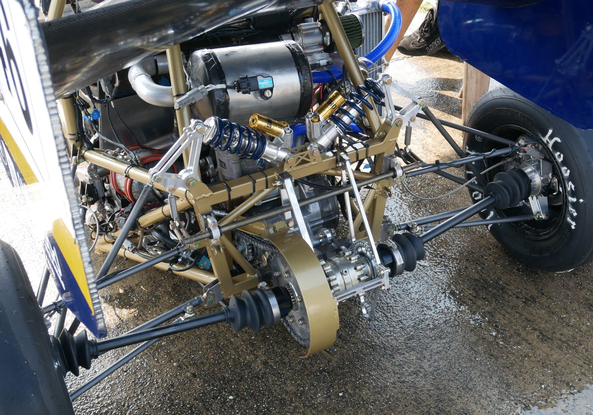
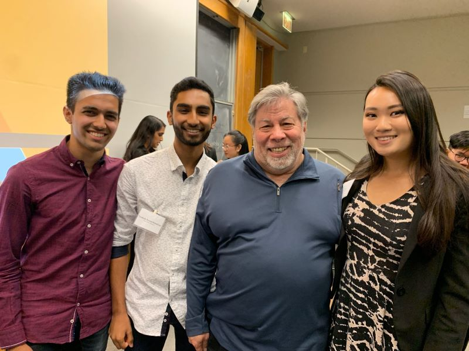

Student Organizations
Berkeley Formula Racing (Co-Lead: Su19-Sp20, Member: Fa18-Sp19)
 Intro: I spent 2 very exciting, fast-paced years with the Berkeley Formula Racing Team, most recently as Electrical Subsystem Co-Lead. In this organization, students design, build, and race a fully functional Formula-1 style racecar to complete in the annual Formula SAE competition. I worked with about 60 remarkably dedicated fellow students with a similar passion for fast cars. We all spent over 20 hours a week on the car! My first year, our team placed 16th place overall out of over 80 competitive college teams; our second year, we couldn't compete in person due to COVID-19 üòî.
Intro: I spent 2 very exciting, fast-paced years with the Berkeley Formula Racing Team, most recently as Electrical Subsystem Co-Lead. In this organization, students design, build, and race a fully functional Formula-1 style racecar to complete in the annual Formula SAE competition. I worked with about 60 remarkably dedicated fellow students with a similar passion for fast cars. We all spent over 20 hours a week on the car! My first year, our team placed 16th place overall out of over 80 competitive college teams; our second year, we couldn't compete in person due to COVID-19 üòî.
Projects: Electrical's design season is spent on projects to further the performance of the car, such as PCB designing, live-telemetry for data acquisition in real-time, a board and casing to house the 6-axis accelerometer and gyroscope, and a dash PCB for shifting lights to indicate the ideal time to shift gears based on a torque-power mapping. For example, I significantly optimized the design and performance of a board called the Brake Plausibility Device (BPD). The board had to shut off the car in the event of a critical failure to protect the driver. For example, suppose that while running the car, a rock got lodged in the throttle, keeping it open at all times. Then, even if the driver pressed the brakes, they wouldn't be able to stop; the BPD had to contain the logic to detect that something must be wrong in such situations and shut off power to the car. This functionality was achieved with transistor-based logic.

Me sitting in our B19 competition car!

Closeup of the final racecar.
Manufacturing: Another primary responsiblity of Electrical is to ensure the mechanical robustness of the 3 primary wire harnesses; Power (ensure all components are powered), ECU (Engine Control Unit), and ADL (sensor data collection). By modularizing the harness bundle into 3 components, we made it much easier to debug and place on the car. As an example, a high-level design for our power harness can be found here. We also placed labels on each wire to avoid time-consuming multimeter continuity checks, easily saving several dozen man-hours over the years. A large amount of our production time is spent on these harnesses; ordering materials, manufacturing, placing the harnesses on the car, and debugging as issues come up in testing.
IEEE Professional Development (Director: Su19-Fa19, Officer: Fa18-Sp19)

Elected as Director of the Professional Development Committee for UC Berkeley's IEEE Student Branch, I helped organize over 20 events and originated many new event ideas. The events spanned from Research Meet-and-Greets to help undergraduates engage with research to Technical Writing and Personal Website Design Workshops to build communication skills and a professional brand. Each event required weeks of planning, especially to ensure that we had representatives from industry or research labs, as well as support from IEEE's members for staffing.
IEEE introduced me to some of the brightest minds on campus, ensuring that I had a place to ask informed questions about classes and Berkeley life. It's been great to hear about the amazing research and activities people are engaged in, and I've been able to give some of this advice back as an IEEE mentor in recent semesters.
Class Projects
NMOS Device Design
In my EE 130 device design class, I used TCAD (Sentaurus Workbench) to numerically simulate the behavior of the custom-designed NMOS device. The channel length was specified at 25 nm based on the current 20 nm CMOS generation. The goal for this project was to become more familiar with how real-world transistors are designed, keeping specifications and tradeoffs in mind. We want to maximize active (on) current and decrease leakage (off) current. As an example, decreasing channel doping causes drain-induced barrier lowering (DIBL), leading to greater leakage current, but increases on-current (higher mobility, less ion-scattering). I explored the effects of such parameters and extracted useful information from the software’s simulation capabilities in order to optimize current consumption (Ion and Ioff), subthreshold swing, and transconductance. I furthermore used my knowledge of device physics to explain what implications a certain design decision would have, and the rationale behind my choices. As can be expected, most design parameters presented a tradeoff, and they interacted with each other in complex ways.
The software self-consistently solves the electrostatics equations for a given set of device parameters to numerically determine the current at different applied gate and drain voltages. It also constructs images of device layouts for visualization purposes. The parameters experimented with include channel doping, source/drain extension depths, various dopant concentrations, the gate-dielectric spacer length, and others. By optimizing the parameters, I achieved an I_on to I_off ratio of 1.04 * 1018, 21 times better than the default value. Please email me for a copy of the full report, including tables and figures outlining my findings such as the sample ones below.
Data from Experiments Run with Varying Dielectric Spacer Length Lsp. Default Shown in Red.

Graph of Current Consuption at Varying Dielectic Spacer Lengths (note Ion and Ioff tradeoff).

BJT/MOS Amplifier Designs
For my EE 105 class, our final labs consisted of single-stage BJT and MOS amplifier designs. In the preliminary labs, we characterized device behavior for a diode and BJT using a Semiconductor Parameter Analyzer (Agilent 4155C), connecting our experimentally observed curves to the physics behind them. We used SpaZilla, a Labview program, for instrument control and data acquisition. One of the important tasks at this stage was characterizing the capacitances; there was parasitic capacitance (from the breadboard and equipment) and component capacitance. By noting that these capacitances are in parallel, we could measure the cutoff frequency for different bias voltages, construct a graph, and linearly extrapolate the zero-bias capacitance.
Once we learned about DC biasing of transistors using resistive voltage dividers, we constructed amplifier circuits and measured performance with varying component values, experimentally and in simulation (LTspice). Figuring out a way to bias the circuits to maintain a temperature-independent bias point was challenging, but with practice, biasing and analyzing transistor-based circuit configurations became much more intuitive.
Cooke Triplet Optical Device Optimization
A Cooke Triplet is a 3-lens configuration that, when designed well, can entirely remove second-order aberrations (monochromatic and chromatic both) and function as an effective imaging device. However, each lens has two surfaces which can have varying radii of curvature and can be made of different materials, and the lenses have distances between them, so there are many variables involved.
In my EE 118 Final Project, we used Zemax Optical Studio for our analysis of the Cooke Triplet, and observed ray fan plots, spot diagrams, vignetting diagrams, and more to optimize the system. We also analyzed the parameter tolerances to gauge the most important variables (that is, which variables were most sensitive, and had to be given highest fine-tuning priority). For more details about the tools used and the design process, please see our presentation below (or in a new tab) and our final report.
Avatar-Based Maze Game
Our final CS 61B project was to create a game; the core constraints were that the tile-based environment must be (pseduo-)randomly generated, and for extra credit, there must be some kind of avatar that is user controlled, and there must be a way to "win" or complete the game. We took these concepts and built a remarkably intricate game that we and friends genuinely enjoyed playing, beyond just for the class. The gameplay was as follows (taken directly from our "folklore/background" section of the project):
The goal of the game is as follows: you control an avatar, the white star. It's tiny, but persistent. By using the WASD keys to move around, you can avoid the menacing exclamation marks (!) following you around. You may be steadfast in your willingness to get to the end point, but they're equally motivated to make sure that never happens. You ultimately want to get to the yellow locked door (multiple times!) to win the game and attain absolute glory. Be careful, there are some specific rules to follow. Once you traverse a tile, it becomes more red, and eventually, it'll become a deadly lava tile, indicated by the presence of an emoji! If you go over a lava tile, you lose a life (you have 3 total to begin with). If the (!) hits you, you lose a life. Try and collect flowers! They're on your side; the less health you have, the more likely they are to help you and grant a life. Each turn, you also have a chance to generate new flowers! Don't worry about running out üòÑ
As a user, you can toggle the wall color scheme, see an interesting bit of background for the game, toggle a super-hard mode, and customize your gameplay. As a programmer, you can do so much more; alter the room-generation algorithm to make easer/harder maps, modify the enemy behavior, change the spawn frequency and helpfulness of flowers; the list is endless. Take a look below for an idea of how the game looks!
Voice-Controlled Robot Car
The goal of this semester-long project was to use linear algebra and circuits principles to build a car that could respond to a constrained set of voice commands, and perform actions based on what was spoken. A microphone collected the audio, which was processed by the on-car low-power Launchpad microcontroller board. Once the audio was filtered and processed, it was then classified as one of 4 words; the selected word determined the action the car took. We applied close-loop feedback to ensure that the car moved as intended with steady-state error correction; with open-loop feedback, the car did not move smoothly.
Our microphone circuitry consisted of a band-pass filter (low-pass chained to a high-pass) to isolate frequencies outside normal human speech. The signal was level-shifted and gained up by an amplifier, with noise and signal drift removed by a decoupling capacitor. It took over 40 voice recordings to find 4 viable words ("moose," "blob," "oscillate," "multiplicity") that the PCA classification could achieve high accuracy with. Yes, we're aware that in a practical setting, you perhaps wouldn't want to say "blob" to make a car go forward üòâ. For many other word combinations, two or more of the resulting k-means clusters would be too close together, and results were muddled. But in the end, our Integration checkoff went smoothly, as our car responded correctly to all of the given commands! Granted, there was some shouting and repetition but overall, definitely a success.
Other Projects
CalHacks 6.0: Sign-ify iOS app (Best Weights and Biases API Prize) (Nov. 2019)
 I've always been interested in teaching, and after coming to Berkeley, I have become more aware of the importance of creating an inclusive environment for everyone to learn. Imposter syndrome runs rampant, and it's our job as a community to ensure everybody is comfortable exercising their opinion and doing whatever they need to learn best, be it asking questions during lecture, turning to a friend for help, or reviewing past lecture materials. In this 36-hour hackathon, we focused on the underserved community of deaf or hard-of-hearing students, who communicate, understand, and think primarily in ASL. The majority of deaf people do not have an “inner voice”; instead they often sign ASL in their heads to themselves. For this reason, deaf students are largely disadvantaged in academia, especially with regard to live attendance of lectures. Our app enables enhanced live-lecture for members of the ASL-speaking community by intelligently converting the professor's speech to a sequence of ASL videos for the user to watch during lecture. This style of real-time audio to ASL conversion has never been done before, and our app bridges the educational barrier that exists in the deaf and hard-of-hearing community.
I've always been interested in teaching, and after coming to Berkeley, I have become more aware of the importance of creating an inclusive environment for everyone to learn. Imposter syndrome runs rampant, and it's our job as a community to ensure everybody is comfortable exercising their opinion and doing whatever they need to learn best, be it asking questions during lecture, turning to a friend for help, or reviewing past lecture materials. In this 36-hour hackathon, we focused on the underserved community of deaf or hard-of-hearing students, who communicate, understand, and think primarily in ASL. The majority of deaf people do not have an “inner voice”; instead they often sign ASL in their heads to themselves. For this reason, deaf students are largely disadvantaged in academia, especially with regard to live attendance of lectures. Our app enables enhanced live-lecture for members of the ASL-speaking community by intelligently converting the professor's speech to a sequence of ASL videos for the user to watch during lecture. This style of real-time audio to ASL conversion has never been done before, and our app bridges the educational barrier that exists in the deaf and hard-of-hearing community.
We broke down the development of the app into 3 phases: converting voice to speech, converting speech to ASL videos, and connecting the two components together in an iOS application. Building off of existing on-device speech recognition models including Pocketsphinx, Mozilla DeepSpeech, iOS Dictation, and more, we decided to combine them in an ensemble model. We employed the Google Cloud Speech to Text API to transcribe videos for ground truth, against which we compared transcription error rates for our models by phonemes, lengths, and syllabic features. Finally, we ran our own tests to ensure that the speech-to-text API was dynamically editing previously spoken words and phrases using context of neighboring words. The ideal weights for each weight assigned to each candidate were optimized over many iterations of testing using the Weights & Biases API (along with generous amounts of freezing layers and honing in!).
As a team we were most proud of our ability to quickly learn new frameworks and use Machine Learning and Reinforcement Learning to develop an application that was scalable and modular. While we were subject to a time restriction, we ensured that our user interface was polished, and that our final app integrated several frameworks seamlessly to deliver a usable product. We pushed ourselves to learn unfamiliar skills so that our solution would be comprehensive, and of course, we’re proud of our ability to come together and solve a problem that could benefit an entire community.
Ascend x Travonde Case Competition (1st Place) (Oct. 2019)

We went through 2 elimination rounds, each with a presentation and judge Q&A. At the end, once we were named as the first place winners, we met and talked with Steve Wozniak!
Here's a condensed summary of our final report: For the Ascend x Travonde Software Engineering challenge, our goal was to optimize the engagement that members of the older-adult community have. After extensive market analysis, we realized that there is a significant dearth of opportunities for older people to form deeper interpersonal connections. This is partly because of the rapid advent of new technological frameworks. So, we developed a multifunctional tool to facilitate this process. Here’s how it works: our registration survey collects logistical and personality information from those interested in connecting to other locals. Then, we process the data using a performant matching algorithm and make an informal introduction through our chat interface suggesting some curated and personalized activities for an initial gathering.
Our product is presented in the form of a sleek, elegant workflow modeled with a web interface, showcasing how a user might fill out their profile and what features we would consider while matching. Once we match them with another user, we would initiate a conversation between the two users, as shown in the chat interface, replete with nearby locations pulled from Travonde’s database, and once they have indicated they are planning to meet up, we will provide them with transportation and residency options. And finally, at the end of their meet-up, we will solicit feedback from the users to further improve the workflow and identify any pain points that need improvement or streamlining. This product has the potential to disrupt the current location-based social media market by targeting the portion of the population who have much more disposable income, ultimately bringing them an opportunity they may have lacked before.